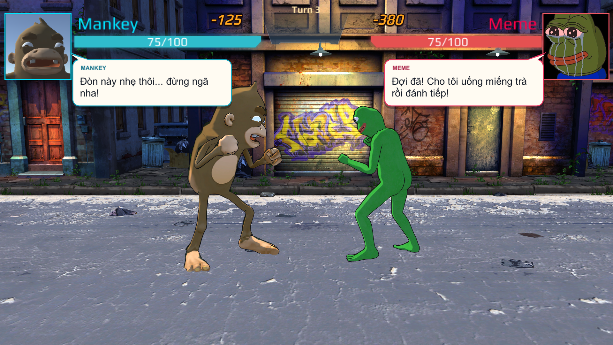
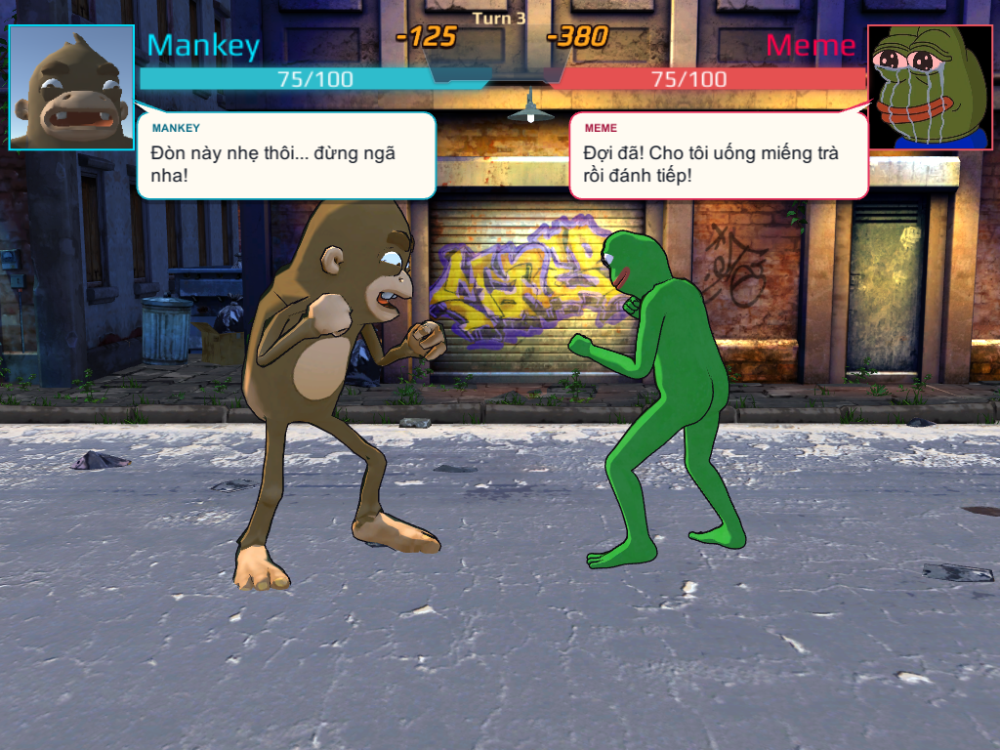

Bong bóng nền kem, góc bo, bóng đổ, viền xanh/đỏ theo nhân vật. Đuôi nằm ở góc trên và hướng về avatar; các bong bóng cũ đã được gỡ. Nội dung tự xuống dòng và hiện bằng hiệu ứng gõ chữ. Số sát thương màu vàng có viền tối, xuất hiện ngay trên thanh máu rồi bay lên và mờ dần; cập nhật thoại không ghi đè số sát thương.

